Eclipse 3.5 and JBoss Tools Tutorial
This tutorial explains how to use the Eclipse IDE and JBoss Tools with a Mavenized Seam project.
Shortcuts
The shortcuts are listed here so we don't have to type the tedious file paths over and over again in this document.
${JBOSS_HOME}- refers to Jboss installation directory, e.g.C:\servers\jboss-4.2.3.GA -
${JBOSS_CONFIG}- refers to the configuration directory e.g.C:\servers\jboss-4.2.3.GA\default -
${JBOSS_DEPLOY}- refers to the JBoss deploy directory, e.g.C:\servers\jboss-4.2.3.GA\default\deploy -
${TRUNK}- the project root directory, i.e. seam-maven-refimpl -
${SEAM_REFIMPL}- the directory where the reference project, i.e. seam-refimpl, is installed on your computer -
${SEAM_TUTORIAL}- the directory where the tutorial project, i.e. seam-tutorial, is installed on your computer

Download and install software:
-
jdk-6.
Note: OpenEJB-3.1.2 and jdk-1.6.0 update18 or later has a known bug: JDK 1.6.0 u18 has a ClassCastException in ClassLoaderUtil.clearSunJarFileFactoryCache . But according to this answer, G2.2 Unable to clear Sun JarFileFactory cache , you should not see any functional problems connected to this bug. -
Maven 2.2.1 or later 2.x.
Note: You can not use Maven 3! The project externalizes some properties that is used to generate the correctjboss-app.xmldependent on the targeted JBoss Application Server. This works fine with Maven 2.2.1, but fails in Maven 3. The latest Maven3.0-beta1 does not evaluate external properties during theear:generate-application-xmlgoal and you will get the following error message:
[ERROR] Failed to execute goal org.apache.maven.plugins:maven-ear-plugin:2.4.2:generate-application-xml (default-generate-application-xml) on project mvn3-problem-ear: Failed to initialize JBoss configuration: Invalid JBoss configuration, version[${as.version}] is not supported. -> [Help 1]The bug is reported in JIRA: http://jira.codehaus.org/browse/MNG-2971. - Eclipse 3.5 Galileo (Eclipse IDE for Java EE Developers with WTP).
- SubClipse-1.6.x, Team Provider plug-in providing support for Subversion within the Eclipse IDE.
- m2eclipse 0.10 core (this require you to uninstall m2eclipse 0.9.x). Also make shure that you are familiar with the Apache Maven Eclipse plugin.
- m2eclipse extras.
- JBoss Seam 2.2.0.GA source code (for JBoss Tools).
- JBoss Tools 3.1.
- TestNG Eclipse plug-in.
-
Jboss 4.2.3.GA Application Server or later.
Note: Download a build that corresponds with your installed jdk,jboss-4.2.3.GA.jdk6.zipis the correct build for jdk-6.
Configure Eclipse and Create Workspace
-
Specify JVM in
eclipse.ini, see Eclipsepedia: Eclipse.ini. Youreclipse.inishould look something like this:-vm C:/Program Files (x86)/Java/jdk1.6.0_17/bin/javaw.exe --launcher.library plugins/org.eclipse.equinox.launcher.win32.win32.x86_1.0.200.v20090519 -startup plugins/org.eclipse.equinox.launcher_1.0.201.R35x_v20090715.jar -product org.eclipse.epp.package.reporting.product --launcher.XXMaxPermSize 256M -showsplash org.eclipse.platform --launcher.XXMaxPermSize 256m -vmargs -Dosgi.requiredJavaVersion=1.5 -Xms128m -Xmx512m
-
Create an empty workspace directory, e.g.
C:/dev/workspaces/seam
Note: Do not add Maven projects under your workspace directory. There are some issues regarding use of the m2eclipse plugin when projects are placed under the workspace directory, e.g.C:/dev/workspaces/seam/myproject: You will not be able to run Maven Eclipse goals from a command shell if your project is placed under the workspace directory; themvn eclipse:eclipse and mvn eclipse:cleangoals will fail to execute. The issues are reported here: http://jira.codehaus.org/browse/MECLIPSE-571, and here: http://jira.codehaus.org/browse/MNG-2057. So, be kind to yourself and create a project directory that is not on the same file path as your workspace directory.
Your directory structure should look something like this:
- Start Eclipse and select the newly created workspace directory. 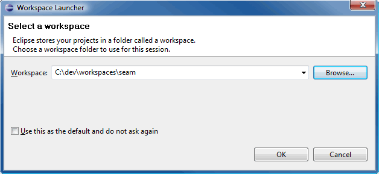
Install Plugins and Configure Workspace
- JDK:
Make sure that Eclipse is running on a JDK and not a JRE.
SelectWindow>Preferencesand browse to theJava>Installed JREssection. - SubClipse:
- m2eclipse:
- Install the m2eclipse Core and m2eclipse Extas plugins.
-
Configure the Maven Eclipse plugin.

-
Configure Eclipse to use an external Maven-2.2.1 installation.
In Preferences, navigate toMaven>Installations. ClickAdd...and select your Maven-2.2.1 home directory.
- TestNG:
- Install the TestNG Eclipse plug-in.
- Configure the TestNG Eclipse plug-in.
- JBoss Application Server and JBoss Tools 3:
- Install the Jboss Application Server
- Install Eclipse Plugins for JBoss and related Technology.
- The JBoss Seam documentation and the JBoss Tools documentation explains these steps in detail.
- WTP Server Reference:
After the Server and the tools are installed you need to define a WTP server reference. The screenshots below outlines the steps needed to configure a WTP server reference for JBoss 4.2.3.-
In Preferences, navigate to Server>Runtime Environments. Click
Add.... Browse to the directory named JBoss Community
and select JBoss 4.2 Runtime.

- Click Next and point the Home Directory to the directory where you installed the server. Select the default configuration. 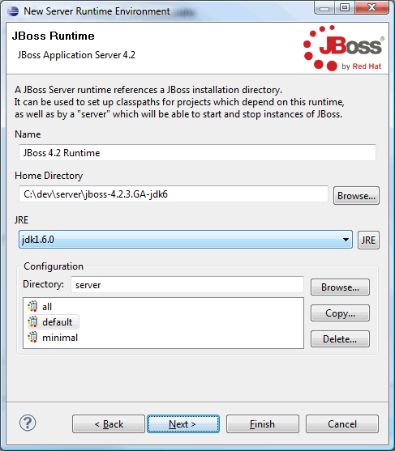
-
Click Next, verify configuration, and click Finish.

- Exit preferences.
-
Open the JBoss AS perspective.

-
Doubleclick on the newly created server, JBoss 4.2.3-jdk6 Server, to open the Server Overview
editor.

-
Verify that the
Use the JBoss deploy directoryradio button is checked. -
Start the server to check that everyting is configured correctly.

- The console output should look something like the screeshot below. 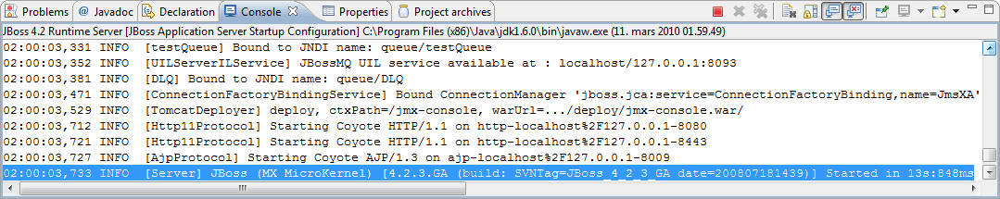
- Stop the server.
-
In Preferences, navigate to Server>Runtime Environments. Click
Add.... Browse to the directory named JBoss Community
and select JBoss 4.2 Runtime.
- Encoding:
Set encoding to UTF-8 (optional).
Make shure that all files are saved with UTF-8 encoding. This is only essential if you're working with i18n.


 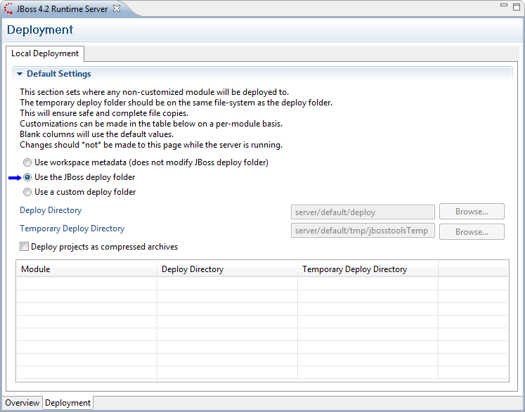
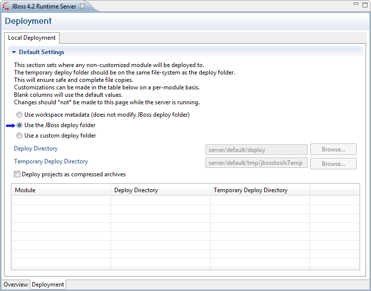


This ends the steps needed to prepare the Eclipse workspace for Maven and JBoss Tools. You need to go trough this steps every time you create a new workspace.
Import a Mavenized Seam Project into Eclipse
m2eclipse provides three options for importing a Maven project into Eclipse including:
- Import an existing Maven project from the local file system
- Check out a Maven project from SCM
- Materialize a Maven project
The options are described in detail in Maven: The Definitive Guide. In this tutorial we'll show how to use the first option.
Import An Existing Maven Project From the Local File System Into Eclipse
m2eclipse can import a Maven project with an existing pom.xml. By pointing at the directory where a Maven project is located, m2eclipse detects all the Maven POMs in the project and provides a hierarchical list of them.
-
Export the
seam-refimplproject from svn to a directory of your choice, the${SEAM_TUTORIAL}directory.
- Modify the POMs as needed.
-
Activate development mode.
Remember to copysrc/main/filters/filter-prod.propertiestofilter-dev.propertiesand point the server to the correct deploy directory (theas.deployproperty value should correspond with theconfigurationdirectory you selected for the WTP server). -
Open a command shell, navigate to your project directory and run:
mvn install eclipse:eclipse
If you omit this step you will from time to time get a lot of null pointer exceptions while importing the project into Eclipse! You can also delete the modules that caused the null pointer exceptions and import them again. -
Import the project: In Eclipse select
File>Importto import the project: 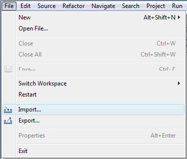 -
Select
Maven>Existing Maven Projectsand click Next.
-
Browse to the directory where the project is located, select it, verify that all modules are checked,
add
env-devto the Profiles field and click Finish.
-
You will notice a build error in the Maven console after the import:
Build errors for seam-tutorial-ear; org.apache.maven.lifecycle.LifecycleExecutionException: Failed to execute goal org.apache.maven.plugins:maven-ear-plugin:2.4.1:generate-application-xml (default-generate-application-xml) on project seam-tutorial-ear: Failed to initialize JBoss configuration
m2eclipse uses Maven3 internally even if we have configured Eclipse to use en external Maven 2.2.x installation, so this the same build error as we will get runningmvn installfrom a command shell using Maven 3. The bug is reported in JIRA: http://jira.codehaus.org/browse/MNG-2971. -
Fix annoyances.
 Incorrect JRE, see: MNGECLIPSE-1752
Incorrect JRE, see: MNGECLIPSE-1752
 Select Workspace default JRE
Select Workspace default JRE

ear/src/main/applicationshould be source folder.Schema validation for some resource files fails due to use of Maven property placeholders. The target resource files should be correct, so you can safely delete cvc and duplicate component erros. - EAR Module Assembly
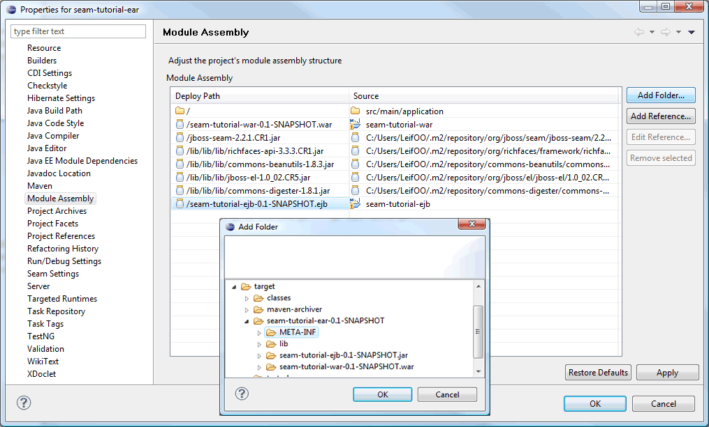- Rename seam-tutorial-ejb.ejb to seam-tutorial-ejb.jar
- Delete
src/main/application - Add folder
target/seam-tutorial-ear-0.1-SNAPSHOT/META-INF
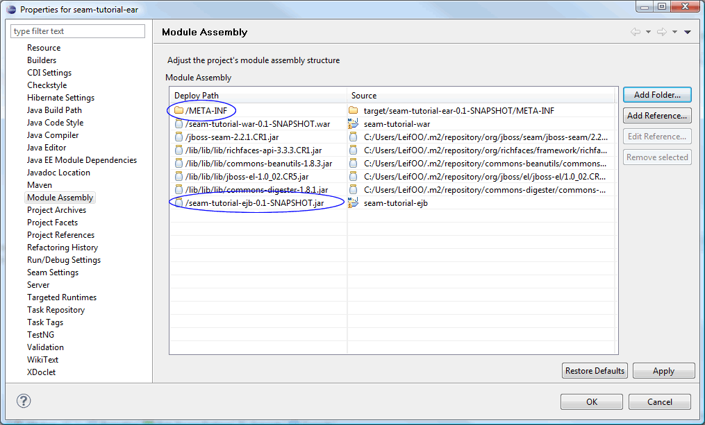- Corrected Module Assembly
- Web Module Assembly
- Add folder
target/seam-tutorial-war-0.1-SNAPSHOT/WEB-INF

- Corrected Module Assembly
- Add folder
- Run Maven install. 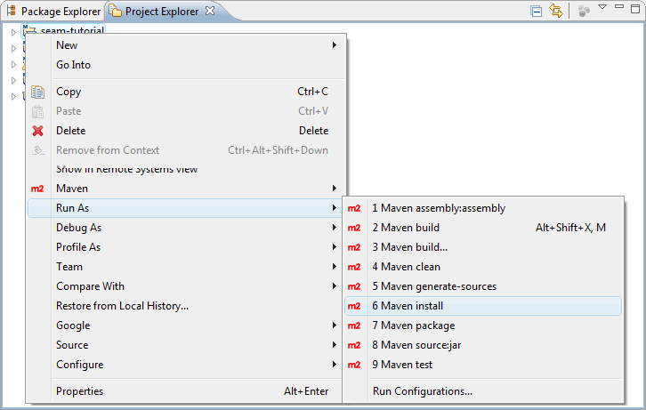 This will fix the build error mentioned earlier.
Project Facets for EAR, EJB and WAR Modules
It should not be necessary to make any changes to the Project Facets, just verify that the facets are selected excactly as shown in the screenshots below. If they are not, then you should delete the project from Eclipse, Completly Remove Eclipse Spesific Settings From the Project and then import the project all over again.
Create Maven Run Configurations
-
Create Maven
install -Pexplodeand a Mavenclean -Punexploderun configurations:
Theinstallgoal with theexplodeprofile is needed to do an initial deploy to the server and also to fix some WTP issues (more on that later). Below is the screenshot for the Maveninstall -Pexploderun configuration. Also create a run configuration for the Mavenclean -Punexplodegoal. Remenber to use the external Maven Runtime you configured for the workspace.
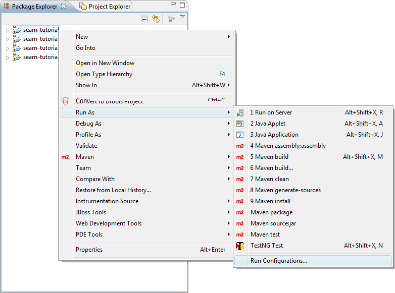
Running the goal should give the following output:
You can run the goal(s) as needed by right clicking on the parent project and selectRun As > Maven buildfrom the menu. 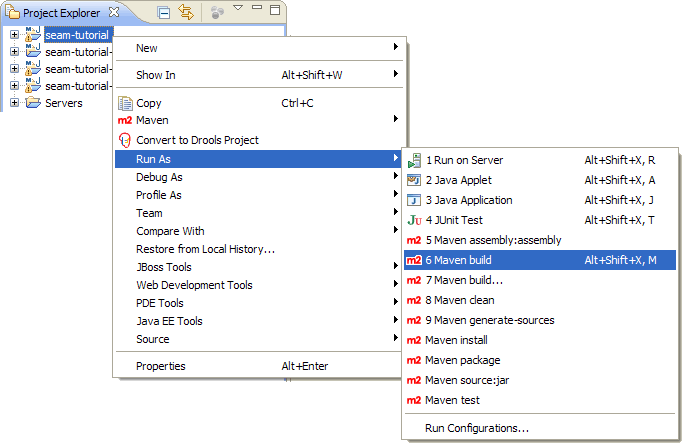 -
Start the server and verify that the deployment works:
A successful deploy should look like this in the Console log:
- Open a browser and point the URL to http://localhost:8080/seam-tutorial
- Stop the server.
Running Tests
Running tests are trivial. Open a test class, right click in the editor and select
Run As > TestNG Test.
The tests should go "green".
The Edit Compile Deploy Cycle
To have an effective development environment we need to automate the edit compile deploy cycle.
You can either use WTP to deploy your project or you can define a Maven builder that
hooks in to the process-classes goal. For the latter, the seam-refimpl POMs has alredy
defined an explode profile for the Maven process-classes goal. All you need to do is to
define a Maven builder that utilizes this profile on the process-classes goal.
WTP
This section explains how to use WTP to deploy your project.
-
Open the JBoss Server View and add project to server.

-
Add the
seam-tutorial-earproject and click Finish.
-
Publish.

- Start the server and check the console output. 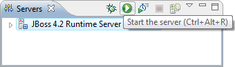 You will notice that the application failed to deploy:
-
Stop the server and inspect the deploy directory. As you can see, the deploy directory contains
3 lib directories and the META-INF directory is empty! The deployed
seam-tutorial-ds.xmlfile is the unfiltered version - not the one fromear/target/seam-tutorial-ear-0.1-SNAPSHOT. The problem is caused by this Eclipse bug: Bug 247090 - Userlibraries incorrectly deployed within EARs (and probably some m2eclipse/wtp/JBossTools bugs as well :)
-
Select the parent project and run
mvn install -Pexplodeto fix the incorrect deploy.
-
Inspect the deploy directory and verify the the incorrectly deployed files are gone and that
seam-tutorial-ds.xml the filtered version), META-INF/application.xml, META-INF/jboss-app.xml and META-INF/MANIFEST.MFare present.
- Start the server in debug mode and check the console output.
- You can check that the WTP works by changing some xhtml and java files. The changes should be reflected immediately on the server (after WTP has done a publish). But as you probably know; not all changes to Java code are hot deployable even in debug mode. If hot code replacement is important to you (and it should be) then get a copy of JRebel from ZERO TURNAROUND.
- Important:
You need to keep an eye on the deploy directory as WTP will do a full (and incorrect) deploy from time to time, in particular when you start Eclipse and then starts the server the first time (or selecting Publish from ther server menu). The fix is to stop the server and runmvn install -Pexplodeagain.
Maven Builder
As an alternative to WTP you can create a Maven builder that hooks into the
process-classes goal. The Maven builder will then take care of the incremental
deployment. In combination with the mvn install -Pexplode
goal you will have a complete compile- build- deploy environment without WTP.
-
Configure the Maven Builder.
The Maven builder executes theexplodeprofile on theprocess-classesgoal. The child poms will "inherit" this builder, so you only need to define the builder on the parent project.

 Note: Experiment with the
Note: Experiment with the Base directoryvariable. If you use the${project_loc}variable then the builder will run only on the sub project that contains the modified file - resulting in a faster build cycle. 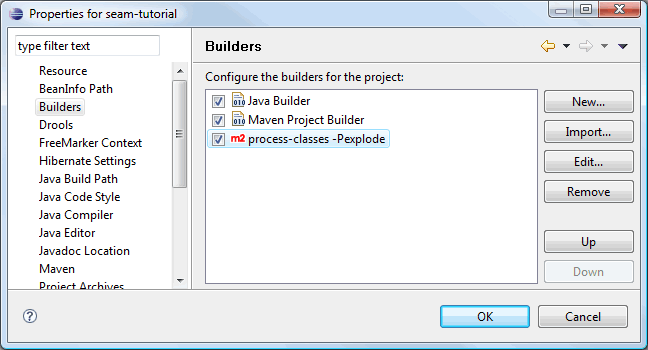 -
Select the parent project and run
mvn install -Pexplodeto do an initial deploy.
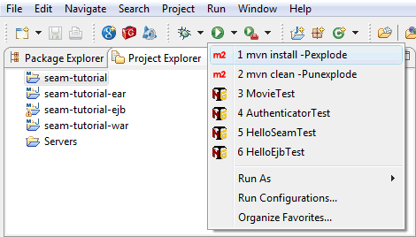 -
Start server i debug mode an test the Builder:
Open a java class, e.g.Authenticator.java. Modify the source, save and check the console output: - The changes should be reflected immediately on the server, but as you probably know; not all changes to Java code are hot deployable even in debug mode. If hot code replacement is important to you (and it should be) then get a copy of JRebel from ZERO TURNAROUND.
Don't Kill One Bird with Two Stones
Choose either to add the project to the WTP server or define a Maven builder.
JBoss Tools
JBoss Tools is a perfect match for Seam devolpers using Maven and the Elipse IDE. It helps you with a a lot of tasks you otherwise would have used hours and days to complete. The Tools is not essential for developing a Mavenized Seam application, but it provides a collection of tools that help you generate code and develop in an incremental manner. The JBossTools project hosts a variety of standalone Eclipse plug-ins that support Java EE development. You can use the tools to do reverse engineering : If you have an existing database then the Tools can generate a full CRUD application with entities, Seam framework classes (home- and list classes) and a user interface with navigation and drilldown. If you use the Tools to create an entity class then the Tools will automatically generate the corresponding Seam framework classes and userinterface (list and a detail page).
JBoss tools is a Eclipse feature, that can be enabled on a project by adding some configuration (JSF and Seam facets, the SeamBuilder and SeamNature) to the Eclipse project. JBoss Tools will manage two projects: the WAR and the EJB project, but the WAR project will be the main source of configuration. By adding the necessary items to the maven-eclipse-plugin configuration for this project and also adding a special Seam configuration file to the .settings directory, JBoss tools will recognize the project correctly. For some reason, JBoss tools also stores some configuration in the workspace configuration. This can not be configured from the Maven Archetype and thus the JBoss Tools configuration is not complete. Because of this, the link between the WAR and EJB project will not be found by JBoss Tools from the EJB project. When a new Seam Artifact (Action, Entity, Form or Conversation) is added from the EJB project context menu, the configurations made in the WAR project are not picked up. When adding from the WAR project they are picked up and some sources will also be written in the EJB projects, as required (source: Configuring a Seam EJB project for development with Maven and JBoss Tools ).
If you really want to learn the mecanisms behind Seam, then it is definitively worth the effort setting up the tools. Play with the tools and study the code that the various tools generates.
Configure Workspace
Unpack JBoss Seam to a directory of your
choice, e.g. C:/ide/libs/jboss-seam-2.2.0.GA. Select Window > Prefereneces
and follow the screenshots.


Configure JBoss Tools For a Project
JBoss Tools will manage two projects: the WAR and the EJB project. The WAR project will be the main source of configuration, so we'll start with the WAR.
Keep a copy of your project, preferably in svn, before you start configuring the tools.
-
The WAR module:
 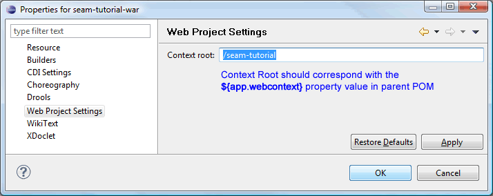
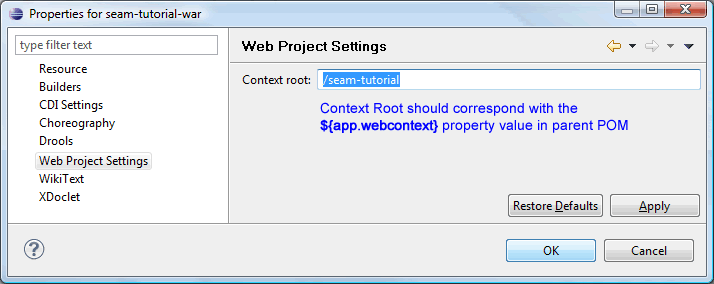
- The EJB module: 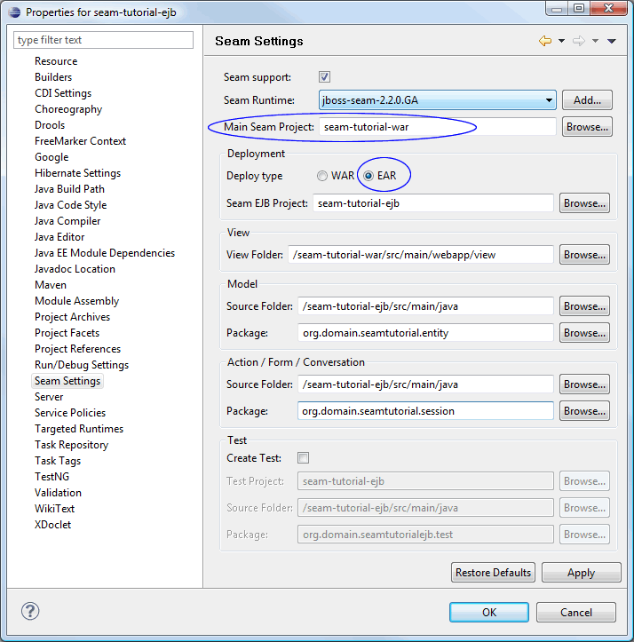
-
The EAR module:
Should not be necessary to do anything here in connection with the Tools. Use default values. -
The parent module:
Should not be necessary to do anything here in connection with the Tools. Use default values. -
The Missing Natures dialog:
Open a view file, e.g.war/src/main/webapp/home.xhtmland ignore the waring about Missing Natures. Do not use the Add JSF Capabilities wizard as suggested in the dialog - it generates code and a lot of jar files in WEB-INF/lib which is not needed by a Maven project. - Verify that none of the original source files has changed during configuring the tools. If you find any changes then revert these files to it's origianl state. Hint: Add your project to svn before configuring JBoss tools, then a svn:commit will list any touched and unversioned files.
Play With JBoss Tools
In this section we'll play with the tools.
Create an Entity Bean the Seam Way
-
Open Seam perspective.

-
In Package Explorer, right click on the war or ejb project and
select
New>Seam Entity
-
Fill in the Seam entity class name, e.g.
MyEntity, and click Finish.

-
Generated code:
 All this code in less than ten seconds! :-))
All this code in less than ten seconds! :-))
MyEntity.javaMyEntityHome.javaMyEntityList.javamyEntityList.xhtmlmyEntity.xhtml -
We're almost there. We configured Seam Settings to generate
xhtmlfiles to thewebapp/viewdirectory, but the code generator does not take this into account. The links in the generatedxhtmlcode "assumes" that the code is generated to thewebappdirectory. So, to finish up, we fix this flaw by making some small changes to the genereatedxhtmlcode. Also add a link tomyEntityList.xhtmlinmenu.xhtml(see the blue text).-
myEntityList.xhtml<!DOCTYPE composition PUBLIC "-//W3C//DTD XHTML 1.0 Transitional//EN" "http://www.w3.org/TR/xhtml1/DTD/xhtml1-transitional.dtd"> <ui:composition xmlns="http://www.w3.org/1999/xhtml" xmlns:s="http://jboss.com/products/seam/taglib" xmlns:ui="http://java.sun.com/jsf/facelets" xmlns:f="http://java.sun.com/jsf/core" xmlns:h="http://java.sun.com/jsf/html" xmlns:rich="http://richfaces.org/rich" template="/layout/template.xhtml"> <ui:define name="body"> <rich:panel> <f:facet name="header">myEntityList</f:facet> <div class="results"> <h:outputText value="No myEntity exists" rendered="#{empty myEntityList.resultList}"/> <h:dataTable id="myEntityList" var="myEntity" value="#{myEntityList.resultList}" rendered="#{not empty myEntityList.resultList}"> <h:column> <f:facet name="header">Id</f:facet> #{myEntity.id} </h:column> <h:column> <f:facet name="header">Name</f:facet> <s:link id="myEntity" value="#{myEntity.name}" propagation="none" view="/view/myEntity.xhtml"> <f:param name="myEntityId" value="#{myEntity.id}"/> </s:link> </h:column> </h:dataTable> </div> </rich:panel> <div class="actionButtons"> <s:button id="done" value="Create myEntity" view="/view/myEntity.xhtml"/> </div> </ui:define> </ui:composition> -
myEntity.xhtml<!DOCTYPE composition PUBLIC "-//W3C//DTD XHTML 1.0 Transitional//EN" "http://www.w3.org/TR/xhtml1/DTD/xhtml1-transitional.dtd"> <ui:composition xmlns="http://www.w3.org/1999/xhtml" xmlns:s="http://jboss.com/products/seam/taglib" xmlns:ui="http://java.sun.com/jsf/facelets" xmlns:f="http://java.sun.com/jsf/core" xmlns:h="http://java.sun.com/jsf/html" xmlns:rich="http://richfaces.org/rich" template="/layout/template.xhtml"> <ui:define name="body"> <h:form id="myEntityForm"> <rich:panel> <f:facet name="header">myEntity</f:facet> <s:decorate id="nameField" template="/layout/edit.xhtml"> <ui:define name="label">Name</ui:define> <h:inputText id="name" required="true" value="#{myEntityHome.instance.name}"/> </s:decorate> <div style="clear:both"/> </rich:panel> <div class="actionButtons"> <h:commandButton id="save" value="Save" action="#{myEntityHome.persist}" rendered="#{!myEntityHome.managed}"/> <h:commandButton id="update" value="Save" action="#{myEntityHome.update}" rendered="#{myEntityHome.managed}"/> <h:commandButton id="delete" value="Delete" action="#{myEntityHome.remove}" immediate="true" rendered="#{myEntityHome.managed}"/> <s:button propagation="end" id="cancel" value="Cancel" view="/view/myEntityList.xhtml"/> </div> </h:form> </ui:define> </ui:composition> -
menu.xhtml<rich:toolBar xmlns="http://www.w3.org/1999/xhtml" xmlns:ui="http://java.sun.com/jsf/facelets" xmlns:h="http://java.sun.com/jsf/html" xmlns:f="http://java.sun.com/jsf/core" xmlns:s="http://jboss.com/products/seam/taglib" xmlns:rich="http://richfaces.org/rich"> <rich:toolBarGroup> <h:outputText value="#{projectName}:"/> <s:link view="/home.xhtml" value="Home" propagation="none"/> </rich:toolBarGroup> <!-- @newMenuItem@ --> <s:link view="/view/example/userList.xhtml" value="User List" includePageParams="false" propagation="none"/> <s:link view="/view/myEntityList.xhtml" value="myEntity List" includePageParams="false" propagation="none"/> <rich:toolBarGroup location="right"> <h:outputText value="signed in as: #{identity.username}" rendered="#{identity.loggedIn}"/> <s:link view="/login.xhtml" value="Login" rendered="#{not identity.loggedIn}" propagation="none"/> <s:link view="/home.xhtml" action="#{identity.logout}" value="Logout" rendered="#{identity.loggedIn}" propagation="none"/> </rich:toolBarGroup> </rich:toolBar>
-
-
That's it! Select the parent project and run
mvn install -Pexplodeto do an initial deploy. Start server and point your browser to http://localhost:8080/seam-tutorial/
Reverse engineering - Done in 60 Seconds!
Well, the tutorial is not done in 60 seconds, but the revrese engineering is.
We will re-use the project from the previous section, so complete that tutorial first.
Configure Database
-
Checkout or export the sql scripts
open18-initial-schema-mysql.sqlandopen18-initial-seed-data-mysql.sqlfrom svn, http://seam-maven-refimpl.googlecode.com/svn/trunk/samples/seaminaction/etc/schema/. -
Open e.g. MySQL Query Browser and create schema
open18initial_db.
-
Open script,
open18-initial-schema-mysql.sqland click execute. 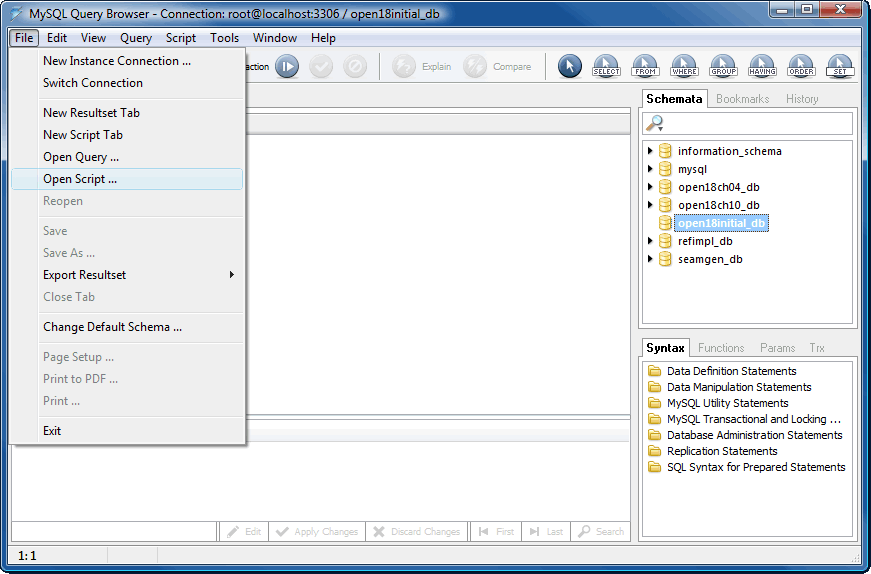 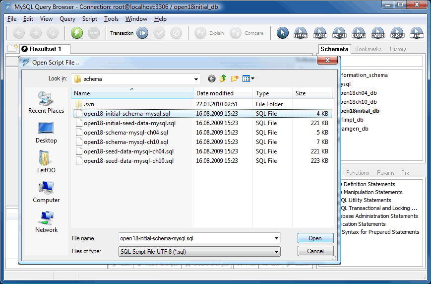
-
Open script,
open18-initial-seed-data-mysql.sqland click execute. 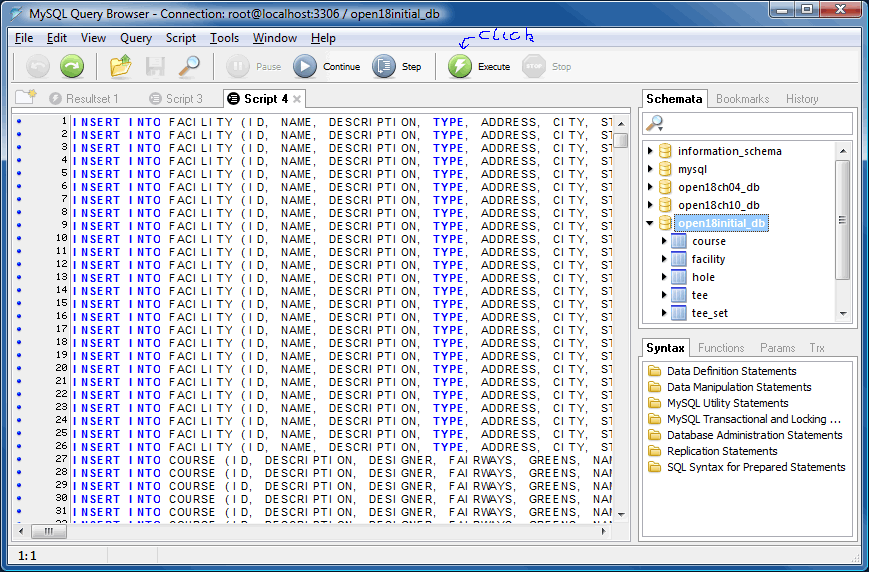
Create and Configure Database Connection
- Open the Database Development perspective.
-
Create a new Database Connection.

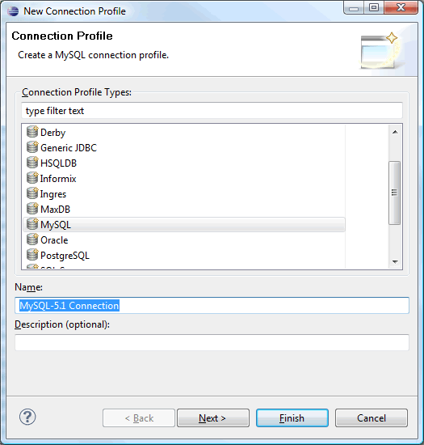 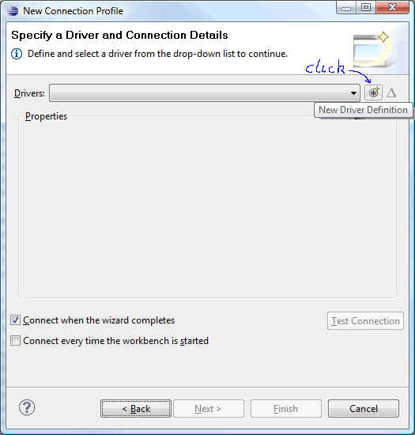 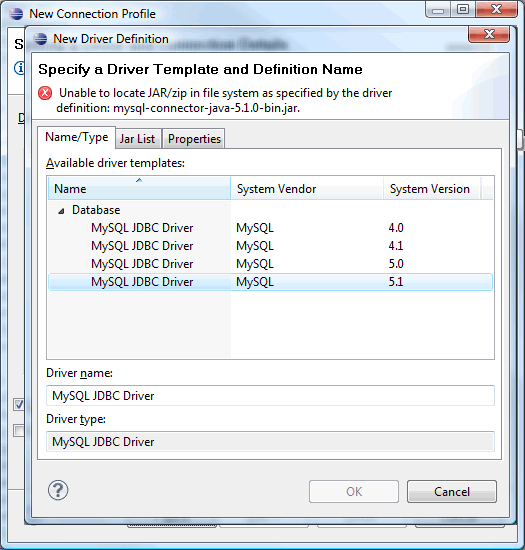
 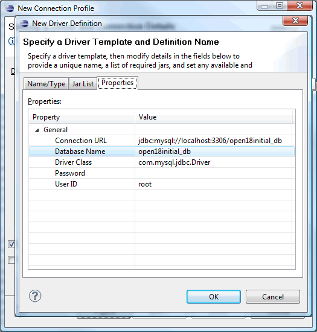
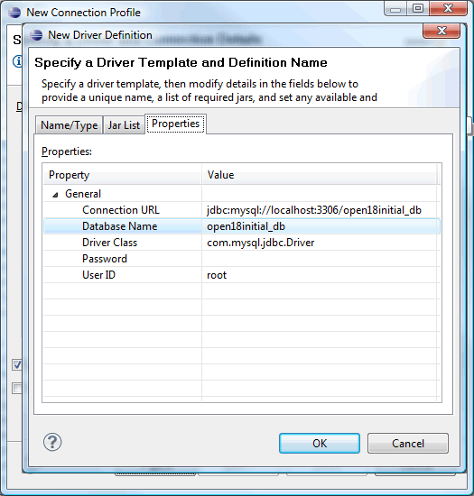
 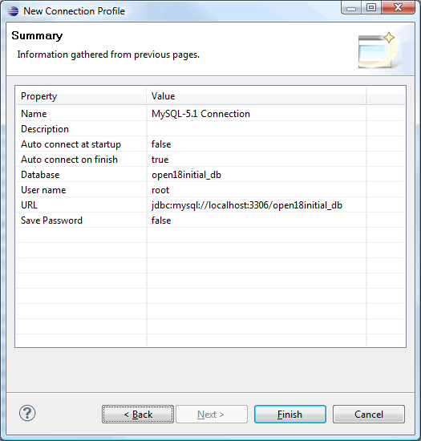
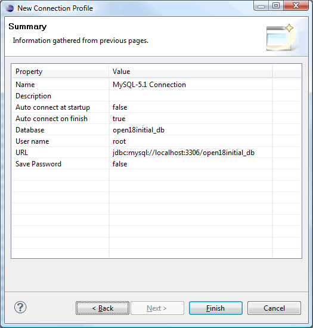

Add Hibernate Configuration
- Open the Hibernate perspective.
-
Right click inside explorer and select
Add Configuration...
-
Add the newly created connection and define a Database dialect.
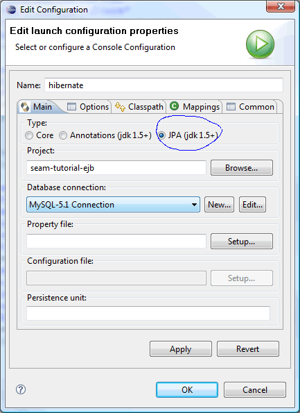
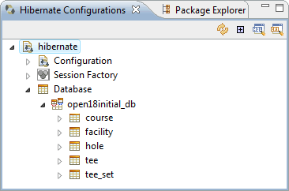
Modify project
-
Open the Seam perspective.
-
Modify
filter-dev.properties.... # Datasource ds =mysql ds.jndi.name =${app}Database ds.database.name =open18initial_db ds.server.name =localhost:3306 ds.driver.class =com.mysql.jdbc.Driver ds.connection.url =jdbc:mysql://${ds.server.name}/${ds.database.name}?characterEncoding=UTF-8 ds.user.name =root ds.password = ds.hibernate.dialect=org.hibernate.dialect.MySQL5InnoDBDialect ds.xml =${app.context}-ds.xml # Persistence unit pu.name =${app}-unit pu.jta.data.source =java:/${ds.jndi.name} pu.hibernate.dialect =${ds.hibernate.dialect} pu.hibernate.hbm2ddl.auto =update pu.hibernate.show_sql =false pu.hibernate.default_batch_fetch_size =16 pu.hibernate.transaction.manager_lookup_class=org.hibernate.transaction.JBossTransactionManagerLookup pu.jboss.entity.manager.factory.jndi.name =java:/${app.context}EntityManagerFactory ... -
Modify the
seam-tutorialproject.-
In
seam-tutorial-ejb/src/test/java; delete packageno.knowit.seam.example.action -
In
seam-tutorial-ejb/src/main/java; delete packagesorg.domain.seamtutorial.session,org.domain.seamtutorial.entity,no.knowit.seam.example.actionandno.knowit.seam.example.model -
In
seam-tutorial-war; delete thewebapp/viewdirectory -
Modify Shurefire plugin in ejb module:
<plugin> <groupId>org.apache.maven.plugins</groupId> <artifactId>maven-surefire-plugin</artifactId><configuration><suiteXmlFiles><suiteXmlFile>src/test/resources/testng.xml</suiteXmlFile></suiteXmlFiles></configuration></plugin>
-
In
-
Modify
webapp/layout/menu.xhtmlto:<rich:toolBar xmlns="http://www.w3.org/1999/xhtml" xmlns:ui="http://java.sun.com/jsf/facelets" xmlns:h="http://java.sun.com/jsf/html" xmlns:f="http://java.sun.com/jsf/core" xmlns:s="http://jboss.com/products/seam/taglib" xmlns:rich="http://richfaces.org/rich"> <rich:toolBarGroup> <h:outputText value="#{projectName}:"/> <s:link id="menuHomeId" view="/home.xhtml" value="Home" propagation="none"/> </rich:toolBarGroup> <!-- @newMenuItem@ --> <rich:toolBarGroup location="right"> <h:outputText id="menuWelcomeId" value="signed in as: #{credentials.username}" rendered="#{identity.loggedIn}" /> <s:link id="menuLoginId" view="/login.xhtml" value="Login" rendered="#{not identity.loggedIn}" propagation="none" /> <s:link id="menuLogoutId" view="/home.xhtml" action="#{identity.logout}" value="Logout" rendered="#{identity.loggedIn}" propagation="none" /> </rich:toolBarGroup> </rich:toolBar> -
Modify Seam settings for WAR: Point the View directory to
/seam-tutorial-war/src/main/webappso that xhtml files are generated to the webapp directory (so we don't need to modify generated xhtml code as we did in the previous tutorial).
- Modify Seam settings for EJB. 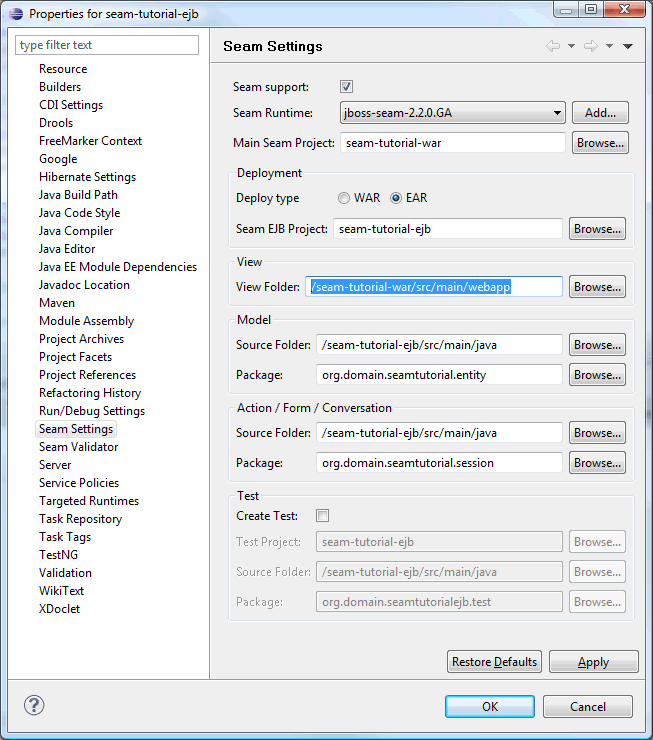
-
Run
mvn cleanandmvn installon the parent project.
Generate Entities From Existing Database
-
Open the Seam perspective.
-
In Package Explorer, right click on the war or ejb project and
select
New>Seam Generate Entities


-
Now, sit back and watch the magic happen.
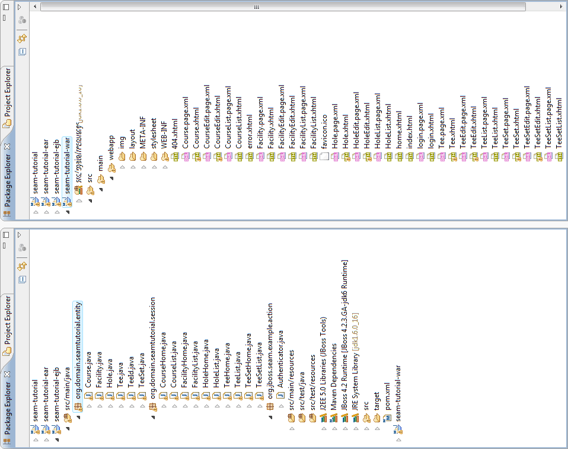 -
Run
mvn install -Pexplode, start server and point your browser to http://localhost:8080/seam-tutorial/
- A full enterprise CRUD application with basic security - generated, deployed and up and running in about 60 seconds. That's impressing!
-
As you browse trough the pages you will find that that the
TeeListpage fails to load.
The solution is to add the following override method toorg.domain.seamtutorial.session.TeeList@Override protected String getCountEjbql() { String before = super.getCountEjbql(); String after = before.replace("select count(tee) ", "select count(*) "); return(after); }Also check comments i code here.
How To's
How To Checkout Trunk From Eclipse
-
In Eclipse select
File>Importto import the trunk: -
Select
Checkout Projects from SVNand click Next.
-
Select an existing repository location and click Next.

-
Select the directory to be checked out from SVN and click Next.

-
Select
Check out as a project in the workspaceand click Next.
-
Uncheck the
Use default workspace locationcheckbox and browse to the directory where you want to check out the trunk.
Note: Do not add Maven projects under your workspace directory.
Click Finish.

-
You should now have access to the complete trunk from Eclipse.

- You must of course import the project(s) into Eclipse as described earlier in the tutorial.
How To Download Sources and Javadocs for Maven Dependencies
The m2eclipse plugin seems to be a bit unpredictable when it comes to downloading
sourcecode and javadocs for the projects dependencies. If you find that source code and javadocs are
missing for some dependencies, then try this:
-
Navigate to the project directory, e.g.
${SEAM_TUTORIAL}, using a command shell and execute: -
mvn eclipse:eclipse -DdownloadSources=true -DdownloadJavadocs=true
How To Completly Remove Eclipse Spesific Settings From a Project
If you find yourself in a situation where your Eclipse project has reached a limbo, then you are faced with two options: Delete the project from your local file system (and then svn:update), or you could try to clean up the mess caused by Eclipse (and you?).
Steps required to clean up Eclipse mess:
-
Delete the project from Eclipse.

-
Exit Eclipse, navigate to the projct directory, e.g. the
${SEAM_TUTORIAL}directory using a command shell and execute maven commands:mvn clean -Penv-dev,unexplodemvn eclipse:clean
-
The
mvn eclipse:cleangoal delets most of the Eclipse spesific project files, but not all of them. We need to clean up the remaining dot files ourselves: Browse all project folders refered in the<modules>section of the parent pom and delete all dot files that belongs to Eclipse, e.g.- .classpath
- .project
- .settings/
- appClientModule/
- .externalToolBuilders/
- *.launch
- .metadata/
-
Execute maven commands:
mvn install -Penv-devmvn eclipse:eclipse
.project,.classpathand WTP files that now makes the project a valid Eclipse project. - Open Eclipse and import the project.
How To Solve: Access restriction: The type Xyz is not accessible due to restriction on required library rt.jar
See: access restriction problems
How To Solve: Build path contains duplicate entry: 'org.eclipse.jst.j2ee.internal.module.container' for project
See: Build path contains duplicate entry: 'org.eclipse.jst.j2ee.internal.module.container'
How To Solve: The Maven 2.0.2 XML parser fails to parse a UTF-8 POM that begins with the optional byte-order mark
Do not add Maven projects under your workspace directory. There are some issues regarding use of the
m2eclipse plugin when projects are placed under the workspace directory, e.g.
C:/dev/ide/workspaces/eclipse-3.4/myproject: You will not be
able to run Maven Eclipse goals from a command shell if your project is placed under the workspace
directory; the mvn eclipse:eclipse and mvn eclipse:clean goals will
fail to execute. The issues are reported here:
http://jira.codehaus.org/browse/MECLIPSE-571, and here:
http://jira.codehaus.org/browse/MNG-2057.
So, be kind to yourself and create a project directory that is not on the same file path as the
workspace directory, e.g. C:/dev/projects
How To Browse (ctrl+clik) Into Java Code From a Visual Editor
The WAR pom must list all Java modules you want to browse into:
<dependencies>
<!-- project -->
<!--
For Eclipse and JBoss Tools:
List all modules you are interested to browse (ctrl+click) into from xhtml pages
-->
<dependency>
<groupId>${project.groupId}</groupId>
<artifactId>${app.context}-ejb</artifactId>
<type>ejb</type>
<scope>provided</scope>
</dependency>
<!-- seam -->
<dependency>
<groupId>org.jboss.seam</groupId>
<artifactId>jboss-seam-ui</artifactId>
</dependency>
.
.
</dependencies>
How To Get JBoss Tools To Work In Vista 64 bit
It only works partially! It seems that everything except for the visual editors (VPE) works fine. You will see the following message in the visual editor: "The VPE editor can't be run because your system environment needs to be changed slightly. Find out more". The link points to a page with no information regarding how to fix this for Vista64 with Jdk-6 64 bit and Eclipse-3.4 64 bit. You will also find that you are not able to browse into java code from the visual editor, which for me is the most essential feature of the VPE. The only workaround I have found so far is to download and install 32 bit versions of Jdk-6 and Eclipse-3.4 and install the required plugins in the Eclipse-3.5 32 bit environment. The visual editors works as expected with the 32 bit configuration.
After installation of Jdk-6 32 bit and Eclipse-3.4 32 bit, ensure that Eclipse uses the "correct"
jdk. Open the eclipse.ini file and add path to the 32 bit Jdk version as emphasized in
text below:
-vm C:/Program Files (x86)/Java/jdk1.6.0_16/bin -showsplash org.eclipse.platform --launcher.XXMaxPermSize 512M -framework plugins\org.eclipse.osgi_3.4.3.R34x_v20081215-1030.jar -vmargs -Dosgi.requiredJavaVersion=1.5 -Xms128m -Xmx512m
Useful Links
- m2eclipse home
- JBosstoolsVisualEditorFAQ
- WTP + M2eclipse + Seam : Maven works !
- Configuring a Seam EJB project for development with Maven and JBoss Tools
- Seam, EJB's and EAR-packaging in Maven
- Common Issues and Workarounds While Building EAR files in Eclipse
- Integration with WTP
- Introduction to m2eclipse